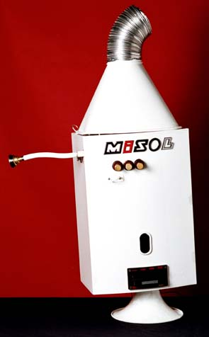
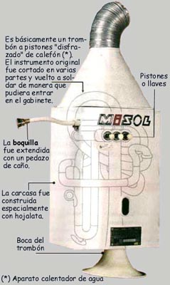
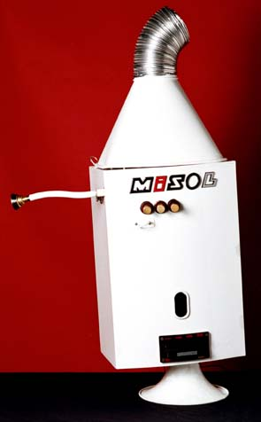
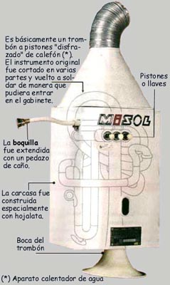
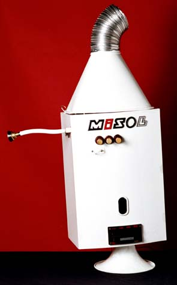
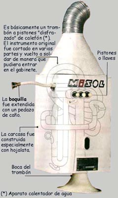

Es uno de los instrumentos que integran el Cuarteto (o Cuartito) de baño. La primera versión de este instrumento, construido sobre la base de un calefón de serpentín, era muy difícil de tocar y fue utilizado solamente en la obra Visita a la Universidad de Wildstone. Años más tarde, Hugo Domínguez perfeccionó el instrumento empleando la tubería de un trombón a pistones. El trombón fue cortado en varias partes y vuelto a soldar de manera que pudiera entrar en el gabinete del calefón. El término "calefón" viene recogido en el Diccionario de la Real Academia, y su significado es "aparato a través de cuyo serpentín circula el agua que se calienta para uso generalmente doméstico"

